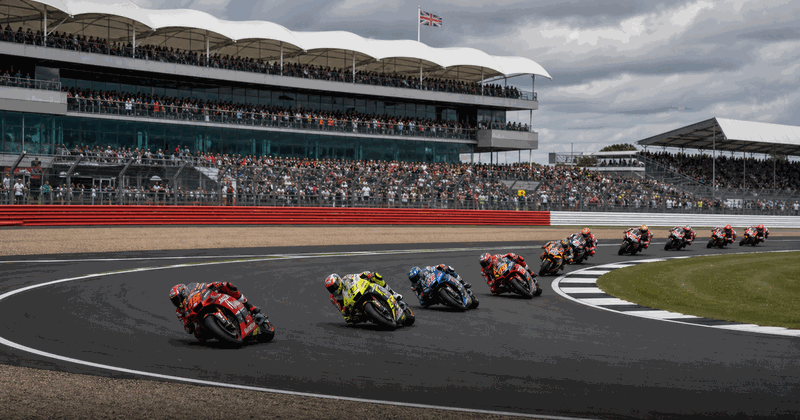
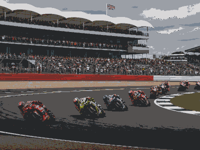

motogp event view
British MotoGP
British MotoGP keeps the evergreen overview and current edition details together in this framed event view.
FrequencyRecurring
Current edition2027
Main citySilverstone
FormatMotogp event view
History viewEdition details in one place
Use the year switcher for recent editions. Date, venue, ticket and programme updates stay inside the same event URL.

More MotoGPInterested in more motogp?Explore related events, places and calendar moments.